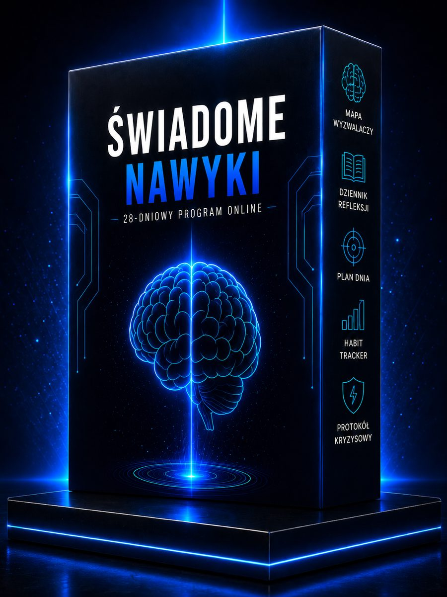
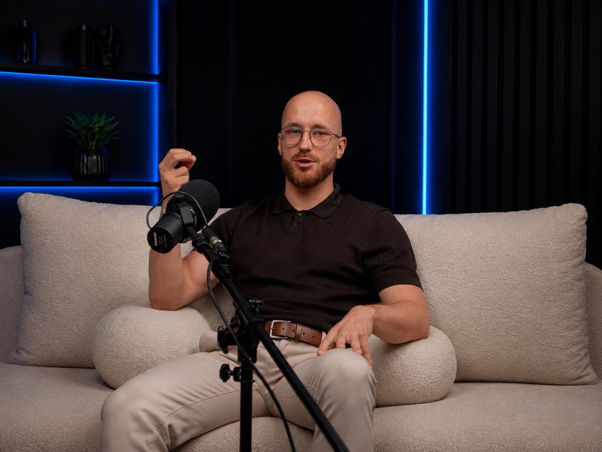
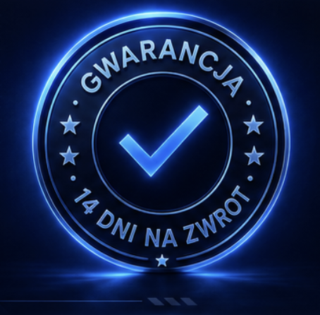

Program Mentalny · 28 dni · dla mężczyzn
Bez terapii na lata, bez zaciskania zębów i bez motywacji, która gaśnie po trzech dniach. 20 minut dziennie: mapa Twojego schematu, rytm dnia i 28 konkretnych kroków zamiast kolejnego postanowienia.
50+
osób po transformacji
30 min
rozmowa w cenie
28 dni
gwarancja pracy
200+
sesji hipnozy
(opcjonalnie, możesz też przejść od razu do oferty)
Nie wiesz, od czego zacząć?
Sprawdź, co najbardziej uruchamia Twój powrót do starego schematu. Odpowiedz na kilka pytań i zobacz, czy dziś najlepszym krokiem jest program, rozmowa, czy dalsza obserwacja.
{{ qSub }}
{{ qBand }}
{{ qDesc }}
Twój pierwszy krok
{{ qReco }}
Zostaję z wynikiem
Wiem, ale odkładam.
Bez struktury łatwo wrócić do starego rytmu.
Program 28 dni
Zamieniam wynik w działanie.
20 minut dziennie · rozmowa 30 min · gwarancja
Twój kod za rozwiązanie quizu
Użyj kodu przy zakupie i odbierz 47 zł zniżki. Zapłacisz 350 zł zamiast 397 zł:
KOD47Cena programu: 397 zł · z kodem KOD47 zapłacisz 350 zł
Chcesz dostać wskazówkę do swojego wyniku?
Zostaw maila, a wyślę Ci krótką wskazówkę dopasowaną do Twojego wyniku oraz pierwszy krok na dziś.
{{ tipSuccessMsg }}
Rozpoznaj schemat
Czy brzmi znajomo?
A może…
"Nie przegrywasz z samym sobą. Przegrywasz z mechanizmem, który działa szybciej niż Twoja świadomość." ~ Tomasz Świadomość
Mechanizm
Za każdym powrotem stoi ten sam, powtarzalny cykl. Dopóki go nie widzisz, kręcisz się w kółko.
Impuls
Automatyzm
Powrót
Wstyd
Obietnica
Program zatrzymuje Cię między impulsem a automatyzmem, zanim ruszy cała pętla. Tam odzyskujesz wybór.
Policz sam
Nie chodzi o straszenie liczbami, tylko o to,
żebyś policzył swój koszt. Sam.
Pieniądze
Ile wydajesz tygodniowo
na schemat?
Pomnóż przez 52.
Czas
Ile godzin tygodniowo
zabiera Ci schemat
i sprzątanie po nim?
Relacje i spokój
Ile kosztuje Cię brak
zaufania do siebie?
Tego nie zwrócisz fakturą.
Jednorazowe 397 zł to zwykle ułamek tego,
co schemat zabiera Ci w jeden miesiąc.
Szczera rozmowa
Rozumiem. Jeśli wiele razy mówiłeś sobie „to ostatni raz",
możesz mieć prawo nie wierzyć kolejnemu programowi.
Dlatego ten proces nie opiera się na motywacji. Opiera się na
28 zadaniach, mapie schematu, codziennym rytmie,
rozmowie kierunkowej z Tomaszem i gwarancji wykonanej pracy.
Nie kupujesz obietnicy.
Kupujesz proces, który możesz
sprawdzić własnym działaniem.
Video
"Dlaczego wracasz do starego schematu, mimo że naprawdę chcesz przestać?"
Video od Tomasza · około 7 minut
Najważniejsza mapa
Nie każdy wraca do starego schematu z tego samego powodu. Zobacz, w której ćwiartce jesteś i dokąd prowadzi program.
Kontrola na siłę
Próbujesz trzymać się zasad, ale nie widzisz emocji, napięcia i wyzwalaczy, które odpalają powrót.
Świadome nawyki ✦ CEL
Widzisz schemat, masz rytm dnia, znasz momenty ryzyka i codziennie budujesz dowody nowej decyzji.
Autopilot
Po fakcie obiecujesz sobie zmianę, ale nie widzisz, gdzie naprawdę zaczyna się schemat.
Wiem, ale wracam
Dużo rozumiesz, ale bez codziennego rytmu i zadań wracasz do punktu zero.
W której ćwiartce jesteś dzisiaj?
Mechanizm
Zaczynasz widzieć, co naprawdę uruchamia powrót: emocje, miejsca, ludzie, pory dnia i automatyczne myśli.
Nie liczysz na motywację. Masz prosty system: krótki start rano, obserwacja w dzień, refleksja wieczorem.
Codziennie robisz małe zadania, które wzmacniają obraz człowieka, który nie musi wracać do starego schematu.
Najpierw widzisz schemat. Potem budujesz rytm. Na końcu zbierasz dowody nowej tożsamości.
Jak to działa
Program nie zatrzymuje się na przerwaniu schematu — buduje człowieka, który go już nie potrzebuje. Stąd cztery kroki:
Nie walczysz tylko z momentem impulsu. Najpierw widzisz cały schemat, potem budujesz rytm, kierunek i nowe dowody na to, kim się stajesz.
Widzisz, co Cię odpala: emocje, miejsca, pory dnia, ludzie i sytuacje.
Przestajesz żyć tylko wokół problemu. Ustalasz, po co chcesz być wolny.
Pracujesz z tym, jak siebie widzisz, zamiast ciągle wracać do starej etykiety.
Codziennie wykonujesz zadania, które wzmacniają nową decyzję.
Mapa procesu
Dzień 1
Zaczynasz od pierwszej decyzji i poznania punktu startowego.
Dzień 7
Masz mapę wyzwalaczy i widzisz, co najczęściej uruchamia stary schemat.
Dzień 14
Zaczynasz budować kierunek, rytm dnia i pierwsze nowe reakcje.
Dzień 21
Pracujesz z nowym obrazem siebie i emocjami, które wcześniej prowadziły do powrotu.
Dzień 28
Masz za sobą pełny proces, deklarację i plan na moment ryzyka.
Dlaczego akurat 28 dni
Wystarczająco długo, żeby przerwać automatyzm i zobaczyć powtarzalny wzór oraz wystarczająco krótko, żeby dowieźć każdego dnia, bez wielkiej deklaracji, która gaśnie po trzech dniach.
Program
Każdy dzień ma jedno zadanie i jedno ćwiczenie. Budujesz jeden stabilny dzień, potem kolejny.
Odkryjesz, co najczęściej odpala powrót: emocje, miejsca, ludzie, pory dnia i konkretne sytuacje.
→ Przestaniesz mówić „nie wiem, czemu znowu to zrobiłem". Zaczniesz widzieć wzór.
Zobaczysz swoją pętlę: impuls → działanie → wstyd → obietnica → powrót.
→ Zaczniesz pracować wcześniej, nie dopiero po fakcie.
Ustalisz, po co naprawdę chcesz wyjść ze starego schematu.
→ Nie będziesz miał tylko zakazu. Będziesz miał kierunek.
Zbudujesz prosty rytm dnia.
→ Pusty czas nie będzie przejmował kontroli tak łatwo jak wcześniej.
Zaczniesz pracować z obrazem siebie, emocjami i decyzjami.
→ Przestaniesz definiować się wyłącznie przez stare potknięcia.
Zaczniesz zbierać dowody nowej reakcji.
→ Budujesz zaufanie do siebie na działaniu, nie na obietnicach.
Domykasz proces, tworzysz deklarację i plan na moment ryzyka.
→ Nie liczysz na idealne warunki. Masz procedurę, do której wracasz.
Codzienny rytm
Ustawiasz kierunek i decyzję na dzień.
Obserwujesz emocje, sytuacje i momenty ryzyka.
Robisz refleksję bez oceniania siebie i zamykasz dzień.
Nie potrzebujesz idealnych warunków. Potrzebujesz prostego rytmu, do którego wracasz każdego dnia.
Zawartość programu

Główna ścieżka
Codzienna ścieżka pracy nad schematem, emocjami, kierunkiem i tożsamością.
W cenie
Omawiasz wynik, największe ryzyko i pierwszy krok. To ustawienie kierunku, nie terapia.
Żebyś wiedział, co uruchamia stary schemat, zanim zareagujesz automatycznie.
Żebyś przestał tylko oceniać siebie po fakcie i zaczął widzieć mechanizm.
Żeby pusty czas nie przejmował kontroli.
Żebyś widział dowody nowego rytmu, a nie tylko o nim myślał.
Żebyś miał plan na pierwsze minuty impulsu.
Instrukcja pracy z zewnętrzną aplikacją do śledzenia postępów.
Opinia osoby z branży mentalnej
"Nie ma tu przypadkowych elementów, wszystko prowadzi człowieka krok po kroku przez proces zmiany. Stosunek jakości do ceny zdecydowanie na plus."
Paweł - Trener mentalny
Narzędzie na najtrudniejszą chwilę
Nie zostajesz sam z impulsem. Masz prosty, 3-krokowy plan na pierwsze minuty, kiedy stary schemat puka do drzwi.
Ciało, oddech, jedno słowo. Nie walczysz z impulsem. Dajesz sobie 60 sekund przerwy.
Który wyzwalacz? Jaka emocja? Nazwanie odbiera impulsowi automatyczną siłę.
Jedno wcześniej przygotowane działanie zastępcze. Wracasz do człowieka, którym się stajesz.
Dostajesz ją jako gotowy Protokół Kryzysowy. Na telefon, do wydruku, na moment, w którym najbardziej się liczy.
Bez niespodzianek
Otrzymujesz dostęp do programu. Od razu po płatności dostajesz wiadomość z instrukcją wejścia.
Zaczynasz od pierwszego zadania. Dzień 1 jest prosty. Jeden krok, nie maraton.
Przechodzisz codzienny rytm: rano, w dzień i wieczorem. Około 20 minut dziennie.
Po wykonaniu procesu umawiasz rozmowę kierunkową z Tomaszem.
30 minut. Bez dodatkowej opłaty.
Szczera rozmowa nr 2
Gdybym powiedział Ci, że sam zakup programu zmieni wszystko, byłaby to kolejna pusta obietnica.
Ten proces wymaga wykonania zadań, szczerości wobec siebie i codziennego rytmu. Nie chodzi o perfekcję tylko, żebyś przestał uciekać od schematu i zaczął go widzieć.
Dlatego program nie opiera się na motywacji. Opiera się na 28 konkretnych krokach.
To nie terapia i nie sesja hipnozy. To 28-dniowy program rozwojowy oparty na zadaniach, obserwacji schematu i budowaniu rytmu dnia.

Hipnoterapeuta · Trener mentalny · Twórca programu wspierającego wychodzenie z destrukcyjnych nawyków
O mnie
Znam ten proces od środka. Wiem, jak wygląda życie w pętli obietnic, powrotów, wstydu i zaczynania od nowa. Zanim zacząłem pomagać innym, sam szukałem sposobu, który nie będzie kolejną chwilową motywacją.
Z czasem zrozumiałem, że problem bardzo rzadko leży tylko w samym zachowaniu. Najczęściej pod spodem są emocje, wyzwalacze, stare schematy i obraz siebie, który w trudnych momentach uruchamia powrót.
Nie uczę tego z teorii. Dlatego program nie jest zbiorem motywacyjnych porad, tylko procesem, który zaczyna się od mapy schematu i kończy na pierwszych dowodach NOWEJ TOŻSAMOŚCI.
50+ osób
po transformacji
Praca z przyczyną
nie tylko z objawem
Proces zmiany
krok po kroku
Historie uczestników
Brunon
Sprzedaż internetowa
Przed
Problem był głębszy niż sam nałóg.
Co pomogło
Regularne zadania i lepsze rozumienie emocji.
Po
Większa kontrola nad życiem i decyzjami.
Cytat
"Regularne zadania nauczyły mnie lepiej rozumieć siebie, swoje emocje i mechanizmy działania."
Alan
Student
Przed
Powracający schemat i brak zaufania do siebie.
Co pomogło
Codzienny rytm i obserwacja wyzwalaczy.
Po
Większa świadomość momentów ryzyka i świadome decyzje.
Cytat
"Program w ciągu miesiąca pomógł mi zmienić moje niechciane nawyki. Zrozumiałem, skąd się wzięły i dzięki temu dziś podejmuję świadome decyzje."
Damian
Zawodowy kierowca
Przed
Napięcie, powrót, wstyd i życie na autopilocie.
Co pomogło
Mapa schematu i proste zadania dzień po dniu.
Po
Pierwszy realny proces zamiast kolejnej obietnicy.
Cytat
"Jestem na 27. dniu programu, a już widzę ogromne zmiany. Największa zmiana zaszła w moim sposobie myślenia. Przestałem sabotować samego siebie."
Opinie uczestników
Prawdziwe osoby, realne doświadczenia, konkretne momenty przełomu.
Dopasowanie
To dla Ciebie, jeśli:
To nie dla Ciebie, jeśli:
Decyzja
Nie podejmujesz decyzji między zakupem, a brakiem zakupu.
Podejmujesz decyzję między kolejną obietnicą, a pierwszym procesem.
Ścieżka 1
Możesz zostawić temat na później. Może przez chwilę będzie spokojniej, ale jeśli schemat zostanie bez systemu, prawdopodobnie wróci w tym samym miejscu: emocje, napięcie, pusty czas, impuls, obietnica od nowa.
Ścieżka 2
Możesz przez 28 dni wykonać konkretne zadania, zobaczyć swój schemat, zbudować rytm dnia i omówić pierwszy kierunek z Tomaszem.
Program Mentalny · Świadome Nawyki · 28 Dni
To mniej niż 14 zł dziennie przez 28 dni, a w cenie masz też rozmowę 30 min z Tomaszem.
Co składa się na wartość
Klikasz → bezpieczna płatność → dostęp na maila w ciągu 1 godziny.
Zaczynam program - 397 zł14 dni gwarancji. Piszesz jedno zdanie i dostajesz zwrot.

BLIK Visa MastercardDostęp od razu · płatność szyfrowana · faktura na życzenie
Gwarancja
Wchodzisz bez ryzyka. Sprawdzasz program w praktyce, nie na obietnicach.
Kupujesz i od razu wchodzisz do programu.
Przechodzisz pierwsze dni i sprawdzasz, czy to dla Ciebie.
Masz 14 dni, żeby spokojnie zdecydować.
Jeśli uznasz, że to nie dla Ciebie, piszesz jedno zdanie i dostajesz pełny zwrot. Bez przesłuchań.
Nie kupujesz pustej obietnicy. Masz 14 dni, żeby sprawdzić program własną pracą i spokojnie zdecydować.
Zaczynam program bez ryzyka - 397 złFAQ
Krótko, konkretnie, bez marketingowej mgły.
{{ faq.a }}
Chcesz iść głębiej po 28 dniach?
Program 28 dni to pierwszy proces: widzisz schemat, budujesz rytm i zbierasz pierwsze dowody NOWEJ TOŻSAMOŚCI.
Jeżeli po tym poczujesz, że chcesz pracować głębiej, możesz wejść w indywidualny mentoring z Tomaszem - dla osób, które nie chcą tylko zatrzymać schematu, ale przebudować swoje życie na głębszym poziomie.
Sprawdzam, czy kwalifikuję się na mentoringDecyzja
Nie musisz czuć się idealnie gotowy. Wystarczy, że zrobisz pierwszy dzień. Resztę poprowadzi proces krok po kroku.
PS od Tomasza
Jeśli boisz się, że to kolejna rzecz, którą kupisz i odłożysz - właśnie dlatego program opiera się na 28 zadaniach, rozmowie kierunkowej i gwarancji wykonanej pracy. Nie kupujesz motywacji. Kupujesz proces.
Program ma charakter rozwojowy, mentoringowy i edukacyjny. Nie jest terapią, diagnozą ani leczeniem medycznym i ich nie zastępuje. Jeśli jesteś w kryzysie, doświadczasz zagrożenia zdrowia lub życia, masz myśli samobójcze albo objawy wymagające pomocy medycznej, skontaktuj się z lekarzem, terapeutą, ośrodkiem leczenia uzależnień lub numerem alarmowym. Efekty są indywidualne i zależą od zaangażowania, sytuacji oraz form wsparcia.
© 2026 Tomasz Świadomość · Program Mentalny Świadome Nawyki
Program 28 dni - 397 zł
Dostęp od razu · gwarancja po 28 zadaniach